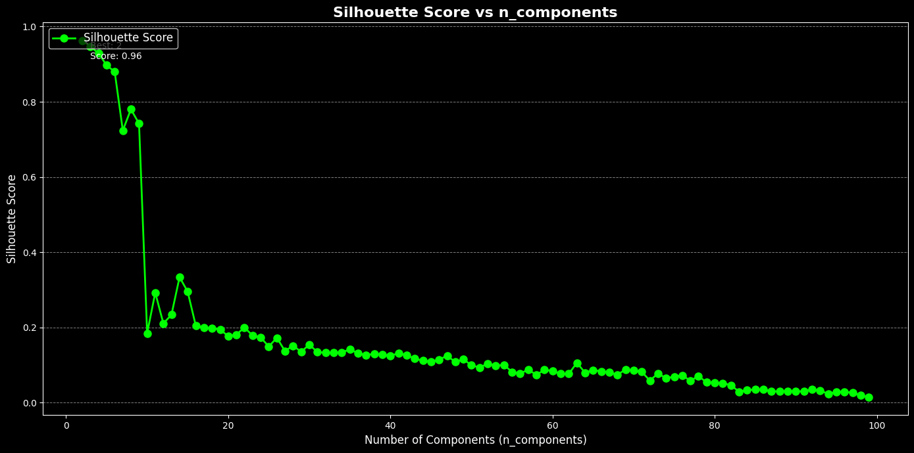
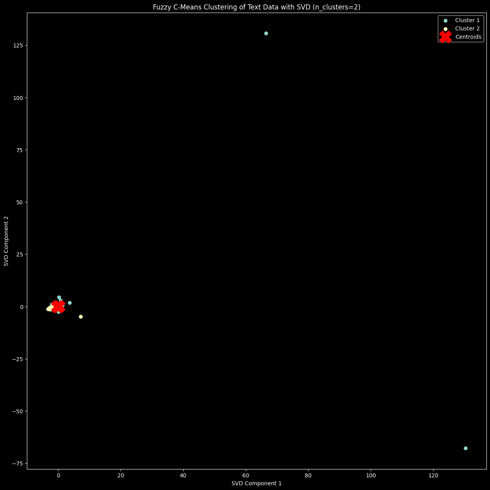
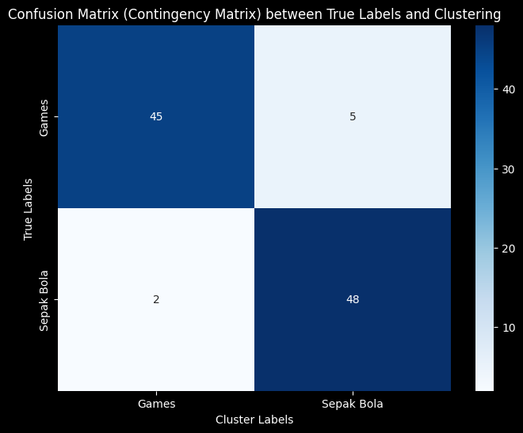

Tugas - 8 Clustering menggunakan Fuzzy C Means#
!pip install fuzzy-c-means
import pandas as pd
import numpy as np
from sklearn.feature_extraction.text import TfidfVectorizer
from sklearn.preprocessing import StandardScaler
from sklearn.decomposition import TruncatedSVD # Import TruncatedSVD untuk reduksi dimensi
import matplotlib.pyplot as plt
from fcmeans import FCM
from sklearn.metrics import silhouette_score
Requirement already satisfied: fuzzy-c-means in /usr/local/lib/python3.10/dist-packages (1.7.2)
Requirement already satisfied: joblib<2.0.0,>=1.2.0 in /usr/local/lib/python3.10/dist-packages (from fuzzy-c-means) (1.4.2)
Requirement already satisfied: numpy<2.0.0,>=1.21.1 in /usr/local/lib/python3.10/dist-packages (from fuzzy-c-means) (1.26.4)
Requirement already satisfied: pydantic<3.0.0,>=2.6.4 in /usr/local/lib/python3.10/dist-packages (from fuzzy-c-means) (2.9.2)
Requirement already satisfied: tabulate<0.9.0,>=0.8.9 in /usr/local/lib/python3.10/dist-packages (from fuzzy-c-means) (0.8.10)
Requirement already satisfied: tqdm<5.0.0,>=4.64.1 in /usr/local/lib/python3.10/dist-packages (from fuzzy-c-means) (4.66.6)
Requirement already satisfied: typer<0.10.0,>=0.9.0 in /usr/local/lib/python3.10/dist-packages (from fuzzy-c-means) (0.9.4)
Requirement already satisfied: annotated-types>=0.6.0 in /usr/local/lib/python3.10/dist-packages (from pydantic<3.0.0,>=2.6.4->fuzzy-c-means) (0.7.0)
Requirement already satisfied: pydantic-core==2.23.4 in /usr/local/lib/python3.10/dist-packages (from pydantic<3.0.0,>=2.6.4->fuzzy-c-means) (2.23.4)
Requirement already satisfied: typing-extensions>=4.6.1 in /usr/local/lib/python3.10/dist-packages (from pydantic<3.0.0,>=2.6.4->fuzzy-c-means) (4.12.2)
Requirement already satisfied: click<9.0.0,>=7.1.1 in /usr/local/lib/python3.10/dist-packages (from typer<0.10.0,>=0.9.0->fuzzy-c-means) (8.1.7)
from google.colab import drive
drive.mount('/content/drive')
Drive already mounted at /content/drive; to attempt to forcibly remount, call drive.mount("/content/drive", force_remount=True).
import pandas as pd
df = pd.read_csv("/content/drive/My Drive/PPW-A/report/Tugas-PPW/hasil_preprocesing.csv")
df.head()
| judul | isi | tanggal | kategori | Hasil cleansing | Hasil case_folding | tokenize | Hasil stopword | |
|---|---|---|---|---|---|---|---|---|
| 0 | Sony Ungkap Model PlayStation Terlaris Dalam S... | Jakarta - Sony akhirnya mengungkap data total ... | Kamis, 28 Nov 2024 14:45 WIB | Games | Jakarta Sony akhirnya mengungkap data total p... | jakarta sony akhirnya mengungkap data total p... | ['jakarta', 'sony', 'akhirnya', 'mengungkap', ... | jakarta sony mengungkap data total penjualan p... |
| 1 | Jadwal M6 Mobile Legends Hari Ini: RRQ Vs KBG,... | Jakarta - Hari ini, kemeriahan M6 Mobile Legen... | Kamis, 28 Nov 2024 10:15 WIB | Games | Jakarta Hari ini kemeriahan M Mobile Legends ... | jakarta hari ini kemeriahan m mobile legends ... | ['jakarta', 'hari', 'ini', 'kemeriahan', 'm', ... | jakarta kemeriahan m mobile legends berlanjut ... |
| 2 | Asian Esports Games 2024: Timnas Indonesia Mob... | Jakarta - Indonesia berhasil meraih juara di k... | Rabu, 27 Nov 2024 21:13 WIB | Games | Jakarta Indonesia berhasil meraih juara di ko... | jakarta indonesia berhasil meraih juara di ko... | ['jakarta', 'indonesia', 'berhasil', 'meraih',... | jakarta indonesia berhasil meraih juara kompet... |
| 3 | 20 Game Android yang Diadaptasi dari Anime, Ad... | Jakarta - Sepertinya sederet game Android ini ... | Selasa, 26 Nov 2024 20:04 WIB | Games | Jakarta Sepertinya sederet game Android ini a... | jakarta sepertinya sederet game android ini a... | ['jakarta', 'sepertinya', 'sederet', 'game', '... | jakarta sederet game android favorit wibu deh ... |
| 4 | Jadwal M6 Mobile legends, Wakil Indonesia Main... | Jakarta - Setelah fase wild card berakhir, kes... | Selasa, 26 Nov 2024 14:10 WIB | Games | Jakarta Setelah fase wild card berakhir keser... | jakarta setelah fase wild card berakhir keser... | ['jakarta', 'setelah', 'fase', 'wild', 'card',... | jakarta fase wild card keseruan m mobile legen... |
texts = df['Hasil stopword']
# Step 2: Vektorisasi TF-IDF
tfidf_vectorizer = TfidfVectorizer()
tfidf_matrix = tfidf_vectorizer.fit_transform(texts)
X_tfidf = tfidf_matrix.toarray()
scaler = StandardScaler()
X_scaled = scaler.fit_transform(X_tfidf)
# Mendapatkan nama fitur dari TF-IDF
feature_names = tfidf_vectorizer.get_feature_names_out()
# Konversi TF-IDF hasil training ke DataFrame
df_train_tfidf = pd.DataFrame(tfidf_matrix.toarray(), columns=feature_names)
df_train_tfidf
df_train_tfidf.to_csv("tf-idf.csv", index=False)
X_tfidf.shape
(100, 4387)
from sklearn.metrics import adjusted_rand_score, normalized_mutual_info_score
from fcmeans import FCM
from sklearn.decomposition import TruncatedSVD
from sklearn.preprocessing import StandardScaler
import numpy as np
# Pastikan X_scaled sudah terdefinisi sebelumnya
# Inisialisasi variabel untuk menyimpan hasil
best_silhouette = -1
best_ari = -1
best_nmi = -1
best_n_components = 0
results = {}
# Asumsikan y_true adalah label asli dari dataset Anda
y_true = df['kategori'] # Ganti 'kategori' dengan nama kolom label asli
for n in range(2, 100): # Rentang nilai n_components
svd = TruncatedSVD(n_components=n, random_state=42)
data_reduced = svd.fit_transform(X_scaled)
# Fuzzy C-Means Clustering
fcm = FCM(n_clusters=2, m=2.0, max_iter=1000, error=0.00001, random_state=42)
fcm.fit(data_reduced)
cluster_labels = fcm.predict(data_reduced)
# Evaluasi dengan Silhouette Score, ARI, dan NMI
silhouette = silhouette_score(data_reduced, cluster_labels)
ari = adjusted_rand_score(y_true, cluster_labels)
nmi = normalized_mutual_info_score(y_true, cluster_labels)
results[n] = {
'silhouette': silhouette,
'ari': ari,
'nmi': nmi
}
# Log setiap iterasi
print(f"Iterasi dengan n_components={n}: Silhouette={silhouette}, ARI={ari}, NMI={nmi}")
# Perbarui nilai terbaik
if silhouette > best_silhouette:
best_silhouette = silhouette
best_n_components = n
if ari > best_ari:
best_ari = ari
if nmi > best_nmi:
best_nmi = nmi
Iterasi dengan n_components=2: Silhouette=0.963236984905526, ARI=0.0, NMI=0.018639764244343528
Iterasi dengan n_components=3: Silhouette=0.9473894484751689, ARI=0.0, NMI=0.018639764244343528
Iterasi dengan n_components=4: Silhouette=0.928667877070437, ARI=0.000808721249959564, NMI=0.03555936072748941
Iterasi dengan n_components=5: Silhouette=0.8973439767243773, ARI=0.00485601903559462, NMI=0.06633317724023008
Iterasi dengan n_components=6: Silhouette=0.8795375501064293, ARI=0.00485601903559462, NMI=0.06633317724023008
Iterasi dengan n_components=7: Silhouette=0.7237245603866738, ARI=0.07389482573813623, NMI=0.19758814796424096
Iterasi dengan n_components=8: Silhouette=0.7800509166944242, ARI=0.04462094507161662, NMI=0.15978522800728928
Iterasi dengan n_components=9: Silhouette=0.7418694848262727, ARI=0.05356186395286556, NMI=0.17241284066769955
Iterasi dengan n_components=10: Silhouette=0.18451131740979307, ARI=0.7369439308410987, NMI=0.6349910030198423
Iterasi dengan n_components=11: Silhouette=0.29227399597749065, ARI=0.5432092721553845, NMI=0.5054552642988157
Iterasi dengan n_components=12: Silhouette=0.21046284749440936, ARI=0.8080682750429576, NMI=0.7265356414540421
Iterasi dengan n_components=13: Silhouette=0.23345138415289415, ARI=0.7369696969696969, NMI=0.6597573034496935
Iterasi dengan n_components=14: Silhouette=0.33368515320204045, ARI=0.43036395147313694, NMI=0.4251733066988798
Iterasi dengan n_components=15: Silhouette=0.2947148433032842, ARI=0.5432092721553845, NMI=0.5054552642988157
Iterasi dengan n_components=16: Silhouette=0.2044287114235984, ARI=0.7721128416103438, NMI=0.6917588737329793
Iterasi dengan n_components=17: Silhouette=0.19916267919567918, ARI=0.7026153394064061, NMI=0.6109637147284563
Iterasi dengan n_components=18: Silhouette=0.19762174270945898, ARI=0.7721128416103438, NMI=0.6917588737329793
Iterasi dengan n_components=19: Silhouette=0.1943175128285213, ARI=0.7369696969696969, NMI=0.6597573034496935
Iterasi dengan n_components=20: Silhouette=0.17648264448246154, ARI=0.8080682750429576, NMI=0.7265356414540421
Iterasi dengan n_components=21: Silhouette=0.18079916043724786, ARI=0.7369525201115061, NMI=0.6425925571552905
Iterasi dengan n_components=22: Silhouette=0.19953613868139786, ARI=0.6691233181935041, NMI=0.6022111600455702
Iterasi dengan n_components=23: Silhouette=0.17848094392556793, ARI=0.8080682750429576, NMI=0.7265356414540421
Iterasi dengan n_components=24: Silhouette=0.17293247811987192, ARI=0.7369525201115061, NMI=0.6425925571552905
Iterasi dengan n_components=25: Silhouette=0.14929872642652953, ARI=0.7721016799725718, NMI=0.6770006327837454
Iterasi dengan n_components=26: Silhouette=0.1721089793759038, ARI=0.6045348272611912, NMI=0.5512937220658846
Iterasi dengan n_components=27: Silhouette=0.13707574944920942, ARI=0.7369439308410987, NMI=0.6349910030198423
Iterasi dengan n_components=28: Silhouette=0.151162649353246, ARI=0.6044056963032804, NMI=0.5006054392285263
Iterasi dengan n_components=29: Silhouette=0.13512621733464114, ARI=0.7720979591836735, NMI=0.6725550808455241
Iterasi dengan n_components=30: Silhouette=0.15409057149211702, ARI=0.6363324680413381, NMI=0.5333833942150725
Iterasi dengan n_components=31: Silhouette=0.13418789202517273, ARI=0.8080620079101718, NMI=0.7149460394223505
Iterasi dengan n_components=32: Silhouette=0.13268466529200496, ARI=0.7720979591836735, NMI=0.6725550808455241
Iterasi dengan n_components=33: Silhouette=0.132432849953863, ARI=0.6363324680413381, NMI=0.5333833942150725
Iterasi dengan n_components=34: Silhouette=0.13375878730644528, ARI=0.6044056963032804, NMI=0.5006054392285263
Iterasi dengan n_components=35: Silhouette=0.14102741928885096, ARI=0.6690584936388014, NMI=0.564205452925309
Iterasi dengan n_components=36: Silhouette=0.1317037129772681, ARI=0.6690584936388014, NMI=0.5642054529253091
Iterasi dengan n_components=37: Silhouette=0.12599019116958807, ARI=0.6690584936388014, NMI=0.5642054529253091
Iterasi dengan n_components=38: Silhouette=0.12970899257384602, ARI=0.6044186131938011, NMI=0.5048484896887586
Iterasi dengan n_components=39: Silhouette=0.12715003102876277, ARI=0.7025959183673469, NMI=0.5978208097977278
Iterasi dengan n_components=40: Silhouette=0.12442853137868298, ARI=0.7369439308410987, NMI=0.6349910030198423
Iterasi dengan n_components=41: Silhouette=0.1310629735055106, ARI=0.7026007738649165, NMI=0.6009721799981695
Iterasi dengan n_components=42: Silhouette=0.12591915710751606, ARI=0.5732897959183674, NMI=0.47063913471263574
Iterasi dengan n_components=43: Silhouette=0.11691702108648475, ARI=0.6363324680413381, NMI=0.5333833942150725
Iterasi dengan n_components=44: Silhouette=0.11138051095646402, ARI=0.7025959183673469, NMI=0.5978208097977278
Iterasi dengan n_components=45: Silhouette=0.10859479443885343, ARI=0.6690584936388014, NMI=0.5642054529253091
Iterasi dengan n_components=46: Silhouette=0.11382317539239095, ARI=0.6363324680413381, NMI=0.5333833942150725
Iterasi dengan n_components=47: Silhouette=0.12474665992056537, ARI=0.6044444444444445, NMI=0.5137532911122106
Iterasi dengan n_components=48: Silhouette=0.10771850461198136, ARI=0.6044056963032804, NMI=0.5006054392285263
Iterasi dengan n_components=49: Silhouette=0.1151924654198404, ARI=0.5733176608874523, NMI=0.4782391721952393
Iterasi dengan n_components=50: Silhouette=0.09927845441151102, ARI=0.6363324680413381, NMI=0.5333833942150725
Iterasi dengan n_components=51: Silhouette=0.0932336669468665, ARI=0.6690692994951206, NMI=0.5697389043881019
Iterasi dengan n_components=52: Silhouette=0.10338668689898975, ARI=0.6363502791654423, NMI=0.5407862117028416
Iterasi dengan n_components=53: Silhouette=0.09780297270208235, ARI=0.7026153394064061, NMI=0.6109637147284563
Iterasi dengan n_components=54: Silhouette=0.10037546217164667, ARI=0.5135174845724361, NMI=0.4218168453401451
Iterasi dengan n_components=55: Silhouette=0.08139761066057533, ARI=0.6690692994951206, NMI=0.5697389043881019
Iterasi dengan n_components=56: Silhouette=0.07722912293202762, ARI=0.7026007738649165, NMI=0.6009721799981695
Iterasi dengan n_components=57: Silhouette=0.08753281001374534, ARI=0.6363502791654423, NMI=0.5407862117028416
Iterasi dengan n_components=58: Silhouette=0.07380328620966214, ARI=0.6363324680413381, NMI=0.5333833942150725
Iterasi dengan n_components=59: Silhouette=0.08685454412970647, ARI=0.5733176608874523, NMI=0.4782391721952393
Iterasi dengan n_components=60: Silhouette=0.08441056290956078, ARI=0.4848148435363599, NMI=0.3931934722666315
Iterasi dengan n_components=61: Silhouette=0.07666141984668198, ARI=0.5134936572464123, NMI=0.41725117676350326
Iterasi dengan n_components=62: Silhouette=0.0762701406200985, ARI=0.5733176608874523, NMI=0.4782391721952393
Iterasi dengan n_components=63: Silhouette=0.10575384413140398, ARI=0.484966194849866, NMI=0.4201950629936393
Iterasi dengan n_components=64: Silhouette=0.07972316767980842, ARI=0.5135571915963368, NMI=0.42977137131885146
Iterasi dengan n_components=65: Silhouette=0.0862438805724099, ARI=0.5430750584576962, NMI=0.4644224376637692
Iterasi dengan n_components=66: Silhouette=0.08321052643791407, ARI=0.456994074340097, NMI=0.3769685615198214
Iterasi dengan n_components=67: Silhouette=0.08076640709132295, ARI=0.5135571915963368, NMI=0.42977137131885146
Iterasi dengan n_components=68: Silhouette=0.07390271965285491, ARI=0.48484848484848486, NMI=0.3987532145992851
Iterasi dengan n_components=69: Silhouette=0.08781510113037663, ARI=0.4570561159533836, NMI=0.386427522941435
Iterasi dengan n_components=70: Silhouette=0.08504012289936663, ARI=0.4570561159533836, NMI=0.386427522941435
Iterasi dengan n_components=71: Silhouette=0.08185443391004965, ARI=0.42995482536145835, NMI=0.356324324338513
Iterasi dengan n_components=72: Silhouette=0.05855677527848421, ARI=0.45694975022039375, NMI=0.37059031163178163
Iterasi dengan n_components=73: Silhouette=0.07729147338349211, ARI=0.42995482536145835, NMI=0.356324324338513
Iterasi dengan n_components=74: Silhouette=0.06489956499338849, ARI=0.3781818181818182, NMI=0.3042340369904945
Iterasi dengan n_components=75: Silhouette=0.0685847209612473, ARI=0.456994074340097, NMI=0.3769685615198214
Iterasi dengan n_components=76: Silhouette=0.07241603074607329, ARI=0.42995482536145835, NMI=0.356324324338513
Iterasi dengan n_components=77: Silhouette=0.05800640512459743, ARI=0.4298989898989899, NMI=0.3492721107165225
Iterasi dengan n_components=78: Silhouette=0.07036112922085325, ARI=0.42995482536145835, NMI=0.356324324338513
Iterasi dengan n_components=79: Silhouette=0.053784024853166204, ARI=0.45694975022039375, NMI=0.37059031163178163
Iterasi dengan n_components=80: Silhouette=0.05233065796294497, ARI=0.45694975022039375, NMI=0.37059031163178163
Iterasi dengan n_components=81: Silhouette=0.05159897981322964, ARI=0.45694975022039375, NMI=0.37059031163178163
Iterasi dengan n_components=82: Silhouette=0.046393389969361064, ARI=0.42986176018023825, NMI=0.3447660573350479
Iterasi dengan n_components=83: Silhouette=0.028992832139505143, ARI=0.3781209056289566, NMI=0.29875197511813195
Iterasi dengan n_components=84: Silhouette=0.03266297602752538, ARI=0.35346938775510206, NMI=0.27807190511263813
Iterasi dengan n_components=85: Silhouette=0.03511454375062662, ARI=0.3781209056289566, NMI=0.29875197511813195
Iterasi dengan n_components=86: Silhouette=0.03458775306763726, ARI=0.35346938775510206, NMI=0.27807190511263813
Iterasi dengan n_components=87: Silhouette=0.02975959291178528, ARI=0.3781209056289566, NMI=0.29875197511813195
Iterasi dengan n_components=88: Silhouette=0.029795029583366554, ARI=0.3781209056289566, NMI=0.29875197511813195
Iterasi dengan n_components=89: Silhouette=0.030140499866304547, ARI=0.3781209056289566, NMI=0.29875197511813195
Iterasi dengan n_components=90: Silhouette=0.029823708772117805, ARI=0.3781209056289566, NMI=0.29875197511813195
Iterasi dengan n_components=91: Silhouette=0.029736223190354658, ARI=0.3781209056289566, NMI=0.29875197511813195
Iterasi dengan n_components=92: Silhouette=0.03484791342951285, ARI=0.42984314349737346, NMI=0.3425675669167147
Iterasi dengan n_components=93: Silhouette=0.031852825161540047, ARI=0.42984314349737346, NMI=0.3425675669167147
Iterasi dengan n_components=94: Silhouette=0.02342055694968757, ARI=0.5429855388345354, NMI=0.44297551540683705
Iterasi dengan n_components=95: Silhouette=0.027924021608751806, ARI=0.6363265306122449, NMI=0.5310044064107192
Iterasi dengan n_components=96: Silhouette=0.028964708994304512, ARI=0.6690584936388014, NMI=0.564205452925309
Iterasi dengan n_components=97: Silhouette=0.026011748441665202, ARI=0.7369439308410987, NMI=0.6349910030198423
Iterasi dengan n_components=98: Silhouette=0.020179453028487407, ARI=0.7369439308410987, NMI=0.6349910030198423
Iterasi dengan n_components=99: Silhouette=0.013803216292731466, ARI=0.7369525201115061, NMI=0.6425925571552905
# Menyimpan hasil terbaik untuk setiap metrik
best_silhouette_n_components = max(results, key=lambda x: results[x]['silhouette'])
best_ari_n_components = max(results, key=lambda x: results[x]['ari'])
best_nmi_n_components = max(results, key=lambda x: results[x]['nmi'])
# Menampilkan hasil terbaik
print(f"\nBest Silhouette Score is achieved by n_components={best_silhouette_n_components} with score: {results[best_silhouette_n_components]['silhouette']}")
print(f"Best ARI is achieved by n_components={best_ari_n_components} with score: {results[best_ari_n_components]['ari']}")
print(f"Best NMI is achieved by n_components={best_nmi_n_components} with score: {results[best_nmi_n_components]['nmi']}")
Best Silhouette Score is achieved by n_components=2 with score: 0.963236984905526
Best ARI is achieved by n_components=12 with score: 0.8080682750429576
Best NMI is achieved by n_components=12 with score: 0.7265356414540421
# Mengurutkan hasil berdasarkan silhouette score (dari tertinggi ke terendah)
sorted_results = sorted(results.items(), key=lambda x: x[1]['silhouette'], reverse=True)
# Menampilkan hasil akhir
print(f"\nBest n_components: {best_n_components} with silhouette score: {best_silhouette}")
print("\nAll results (sorted by silhouette score):")
for n, score in sorted_results:
print(f"n_components={n}: Silhouette Score={score}")
Best n_components: 2 with silhouette score: 0.963236984905526
All results (sorted by silhouette score):
n_components=2: Silhouette Score={'silhouette': 0.963236984905526, 'ari': 0.0, 'nmi': 0.018639764244343528}
n_components=3: Silhouette Score={'silhouette': 0.9473894484751689, 'ari': 0.0, 'nmi': 0.018639764244343528}
n_components=4: Silhouette Score={'silhouette': 0.928667877070437, 'ari': 0.000808721249959564, 'nmi': 0.03555936072748941}
n_components=5: Silhouette Score={'silhouette': 0.8973439767243773, 'ari': 0.00485601903559462, 'nmi': 0.06633317724023008}
n_components=6: Silhouette Score={'silhouette': 0.8795375501064293, 'ari': 0.00485601903559462, 'nmi': 0.06633317724023008}
n_components=8: Silhouette Score={'silhouette': 0.7800509166944242, 'ari': 0.04462094507161662, 'nmi': 0.15978522800728928}
n_components=9: Silhouette Score={'silhouette': 0.7418694848262727, 'ari': 0.05356186395286556, 'nmi': 0.17241284066769955}
n_components=7: Silhouette Score={'silhouette': 0.7237245603866738, 'ari': 0.07389482573813623, 'nmi': 0.19758814796424096}
n_components=14: Silhouette Score={'silhouette': 0.33368515320204045, 'ari': 0.43036395147313694, 'nmi': 0.4251733066988798}
n_components=15: Silhouette Score={'silhouette': 0.2947148433032842, 'ari': 0.5432092721553845, 'nmi': 0.5054552642988157}
n_components=11: Silhouette Score={'silhouette': 0.29227399597749065, 'ari': 0.5432092721553845, 'nmi': 0.5054552642988157}
n_components=13: Silhouette Score={'silhouette': 0.23345138415289415, 'ari': 0.7369696969696969, 'nmi': 0.6597573034496935}
n_components=12: Silhouette Score={'silhouette': 0.21046284749440936, 'ari': 0.8080682750429576, 'nmi': 0.7265356414540421}
n_components=16: Silhouette Score={'silhouette': 0.2044287114235984, 'ari': 0.7721128416103438, 'nmi': 0.6917588737329793}
n_components=22: Silhouette Score={'silhouette': 0.19953613868139786, 'ari': 0.6691233181935041, 'nmi': 0.6022111600455702}
n_components=17: Silhouette Score={'silhouette': 0.19916267919567918, 'ari': 0.7026153394064061, 'nmi': 0.6109637147284563}
n_components=18: Silhouette Score={'silhouette': 0.19762174270945898, 'ari': 0.7721128416103438, 'nmi': 0.6917588737329793}
n_components=19: Silhouette Score={'silhouette': 0.1943175128285213, 'ari': 0.7369696969696969, 'nmi': 0.6597573034496935}
n_components=10: Silhouette Score={'silhouette': 0.18451131740979307, 'ari': 0.7369439308410987, 'nmi': 0.6349910030198423}
n_components=21: Silhouette Score={'silhouette': 0.18079916043724786, 'ari': 0.7369525201115061, 'nmi': 0.6425925571552905}
n_components=23: Silhouette Score={'silhouette': 0.17848094392556793, 'ari': 0.8080682750429576, 'nmi': 0.7265356414540421}
n_components=20: Silhouette Score={'silhouette': 0.17648264448246154, 'ari': 0.8080682750429576, 'nmi': 0.7265356414540421}
n_components=24: Silhouette Score={'silhouette': 0.17293247811987192, 'ari': 0.7369525201115061, 'nmi': 0.6425925571552905}
n_components=26: Silhouette Score={'silhouette': 0.1721089793759038, 'ari': 0.6045348272611912, 'nmi': 0.5512937220658846}
n_components=30: Silhouette Score={'silhouette': 0.15409057149211702, 'ari': 0.6363324680413381, 'nmi': 0.5333833942150725}
n_components=28: Silhouette Score={'silhouette': 0.151162649353246, 'ari': 0.6044056963032804, 'nmi': 0.5006054392285263}
n_components=25: Silhouette Score={'silhouette': 0.14929872642652953, 'ari': 0.7721016799725718, 'nmi': 0.6770006327837454}
n_components=35: Silhouette Score={'silhouette': 0.14102741928885096, 'ari': 0.6690584936388014, 'nmi': 0.564205452925309}
n_components=27: Silhouette Score={'silhouette': 0.13707574944920942, 'ari': 0.7369439308410987, 'nmi': 0.6349910030198423}
n_components=29: Silhouette Score={'silhouette': 0.13512621733464114, 'ari': 0.7720979591836735, 'nmi': 0.6725550808455241}
n_components=31: Silhouette Score={'silhouette': 0.13418789202517273, 'ari': 0.8080620079101718, 'nmi': 0.7149460394223505}
n_components=34: Silhouette Score={'silhouette': 0.13375878730644528, 'ari': 0.6044056963032804, 'nmi': 0.5006054392285263}
n_components=32: Silhouette Score={'silhouette': 0.13268466529200496, 'ari': 0.7720979591836735, 'nmi': 0.6725550808455241}
n_components=33: Silhouette Score={'silhouette': 0.132432849953863, 'ari': 0.6363324680413381, 'nmi': 0.5333833942150725}
n_components=36: Silhouette Score={'silhouette': 0.1317037129772681, 'ari': 0.6690584936388014, 'nmi': 0.5642054529253091}
n_components=41: Silhouette Score={'silhouette': 0.1310629735055106, 'ari': 0.7026007738649165, 'nmi': 0.6009721799981695}
n_components=38: Silhouette Score={'silhouette': 0.12970899257384602, 'ari': 0.6044186131938011, 'nmi': 0.5048484896887586}
n_components=39: Silhouette Score={'silhouette': 0.12715003102876277, 'ari': 0.7025959183673469, 'nmi': 0.5978208097977278}
n_components=37: Silhouette Score={'silhouette': 0.12599019116958807, 'ari': 0.6690584936388014, 'nmi': 0.5642054529253091}
n_components=42: Silhouette Score={'silhouette': 0.12591915710751606, 'ari': 0.5732897959183674, 'nmi': 0.47063913471263574}
n_components=47: Silhouette Score={'silhouette': 0.12474665992056537, 'ari': 0.6044444444444445, 'nmi': 0.5137532911122106}
n_components=40: Silhouette Score={'silhouette': 0.12442853137868298, 'ari': 0.7369439308410987, 'nmi': 0.6349910030198423}
n_components=43: Silhouette Score={'silhouette': 0.11691702108648475, 'ari': 0.6363324680413381, 'nmi': 0.5333833942150725}
n_components=49: Silhouette Score={'silhouette': 0.1151924654198404, 'ari': 0.5733176608874523, 'nmi': 0.4782391721952393}
n_components=46: Silhouette Score={'silhouette': 0.11382317539239095, 'ari': 0.6363324680413381, 'nmi': 0.5333833942150725}
n_components=44: Silhouette Score={'silhouette': 0.11138051095646402, 'ari': 0.7025959183673469, 'nmi': 0.5978208097977278}
n_components=45: Silhouette Score={'silhouette': 0.10859479443885343, 'ari': 0.6690584936388014, 'nmi': 0.5642054529253091}
n_components=48: Silhouette Score={'silhouette': 0.10771850461198136, 'ari': 0.6044056963032804, 'nmi': 0.5006054392285263}
n_components=63: Silhouette Score={'silhouette': 0.10575384413140398, 'ari': 0.484966194849866, 'nmi': 0.4201950629936393}
n_components=52: Silhouette Score={'silhouette': 0.10338668689898975, 'ari': 0.6363502791654423, 'nmi': 0.5407862117028416}
n_components=54: Silhouette Score={'silhouette': 0.10037546217164667, 'ari': 0.5135174845724361, 'nmi': 0.4218168453401451}
n_components=50: Silhouette Score={'silhouette': 0.09927845441151102, 'ari': 0.6363324680413381, 'nmi': 0.5333833942150725}
n_components=53: Silhouette Score={'silhouette': 0.09780297270208235, 'ari': 0.7026153394064061, 'nmi': 0.6109637147284563}
n_components=51: Silhouette Score={'silhouette': 0.0932336669468665, 'ari': 0.6690692994951206, 'nmi': 0.5697389043881019}
n_components=69: Silhouette Score={'silhouette': 0.08781510113037663, 'ari': 0.4570561159533836, 'nmi': 0.386427522941435}
n_components=57: Silhouette Score={'silhouette': 0.08753281001374534, 'ari': 0.6363502791654423, 'nmi': 0.5407862117028416}
n_components=59: Silhouette Score={'silhouette': 0.08685454412970647, 'ari': 0.5733176608874523, 'nmi': 0.4782391721952393}
n_components=65: Silhouette Score={'silhouette': 0.0862438805724099, 'ari': 0.5430750584576962, 'nmi': 0.4644224376637692}
n_components=70: Silhouette Score={'silhouette': 0.08504012289936663, 'ari': 0.4570561159533836, 'nmi': 0.386427522941435}
n_components=60: Silhouette Score={'silhouette': 0.08441056290956078, 'ari': 0.4848148435363599, 'nmi': 0.3931934722666315}
n_components=66: Silhouette Score={'silhouette': 0.08321052643791407, 'ari': 0.456994074340097, 'nmi': 0.3769685615198214}
n_components=71: Silhouette Score={'silhouette': 0.08185443391004965, 'ari': 0.42995482536145835, 'nmi': 0.356324324338513}
n_components=55: Silhouette Score={'silhouette': 0.08139761066057533, 'ari': 0.6690692994951206, 'nmi': 0.5697389043881019}
n_components=67: Silhouette Score={'silhouette': 0.08076640709132295, 'ari': 0.5135571915963368, 'nmi': 0.42977137131885146}
n_components=64: Silhouette Score={'silhouette': 0.07972316767980842, 'ari': 0.5135571915963368, 'nmi': 0.42977137131885146}
n_components=73: Silhouette Score={'silhouette': 0.07729147338349211, 'ari': 0.42995482536145835, 'nmi': 0.356324324338513}
n_components=56: Silhouette Score={'silhouette': 0.07722912293202762, 'ari': 0.7026007738649165, 'nmi': 0.6009721799981695}
n_components=61: Silhouette Score={'silhouette': 0.07666141984668198, 'ari': 0.5134936572464123, 'nmi': 0.41725117676350326}
n_components=62: Silhouette Score={'silhouette': 0.0762701406200985, 'ari': 0.5733176608874523, 'nmi': 0.4782391721952393}
n_components=68: Silhouette Score={'silhouette': 0.07390271965285491, 'ari': 0.48484848484848486, 'nmi': 0.3987532145992851}
n_components=58: Silhouette Score={'silhouette': 0.07380328620966214, 'ari': 0.6363324680413381, 'nmi': 0.5333833942150725}
n_components=76: Silhouette Score={'silhouette': 0.07241603074607329, 'ari': 0.42995482536145835, 'nmi': 0.356324324338513}
n_components=78: Silhouette Score={'silhouette': 0.07036112922085325, 'ari': 0.42995482536145835, 'nmi': 0.356324324338513}
n_components=75: Silhouette Score={'silhouette': 0.0685847209612473, 'ari': 0.456994074340097, 'nmi': 0.3769685615198214}
n_components=74: Silhouette Score={'silhouette': 0.06489956499338849, 'ari': 0.3781818181818182, 'nmi': 0.3042340369904945}
n_components=72: Silhouette Score={'silhouette': 0.05855677527848421, 'ari': 0.45694975022039375, 'nmi': 0.37059031163178163}
n_components=77: Silhouette Score={'silhouette': 0.05800640512459743, 'ari': 0.4298989898989899, 'nmi': 0.3492721107165225}
n_components=79: Silhouette Score={'silhouette': 0.053784024853166204, 'ari': 0.45694975022039375, 'nmi': 0.37059031163178163}
n_components=80: Silhouette Score={'silhouette': 0.05233065796294497, 'ari': 0.45694975022039375, 'nmi': 0.37059031163178163}
n_components=81: Silhouette Score={'silhouette': 0.05159897981322964, 'ari': 0.45694975022039375, 'nmi': 0.37059031163178163}
n_components=82: Silhouette Score={'silhouette': 0.046393389969361064, 'ari': 0.42986176018023825, 'nmi': 0.3447660573350479}
n_components=85: Silhouette Score={'silhouette': 0.03511454375062662, 'ari': 0.3781209056289566, 'nmi': 0.29875197511813195}
n_components=92: Silhouette Score={'silhouette': 0.03484791342951285, 'ari': 0.42984314349737346, 'nmi': 0.3425675669167147}
n_components=86: Silhouette Score={'silhouette': 0.03458775306763726, 'ari': 0.35346938775510206, 'nmi': 0.27807190511263813}
n_components=84: Silhouette Score={'silhouette': 0.03266297602752538, 'ari': 0.35346938775510206, 'nmi': 0.27807190511263813}
n_components=93: Silhouette Score={'silhouette': 0.031852825161540047, 'ari': 0.42984314349737346, 'nmi': 0.3425675669167147}
n_components=89: Silhouette Score={'silhouette': 0.030140499866304547, 'ari': 0.3781209056289566, 'nmi': 0.29875197511813195}
n_components=90: Silhouette Score={'silhouette': 0.029823708772117805, 'ari': 0.3781209056289566, 'nmi': 0.29875197511813195}
n_components=88: Silhouette Score={'silhouette': 0.029795029583366554, 'ari': 0.3781209056289566, 'nmi': 0.29875197511813195}
n_components=87: Silhouette Score={'silhouette': 0.02975959291178528, 'ari': 0.3781209056289566, 'nmi': 0.29875197511813195}
n_components=91: Silhouette Score={'silhouette': 0.029736223190354658, 'ari': 0.3781209056289566, 'nmi': 0.29875197511813195}
n_components=83: Silhouette Score={'silhouette': 0.028992832139505143, 'ari': 0.3781209056289566, 'nmi': 0.29875197511813195}
n_components=96: Silhouette Score={'silhouette': 0.028964708994304512, 'ari': 0.6690584936388014, 'nmi': 0.564205452925309}
n_components=95: Silhouette Score={'silhouette': 0.027924021608751806, 'ari': 0.6363265306122449, 'nmi': 0.5310044064107192}
n_components=97: Silhouette Score={'silhouette': 0.026011748441665202, 'ari': 0.7369439308410987, 'nmi': 0.6349910030198423}
n_components=94: Silhouette Score={'silhouette': 0.02342055694968757, 'ari': 0.5429855388345354, 'nmi': 0.44297551540683705}
n_components=98: Silhouette Score={'silhouette': 0.020179453028487407, 'ari': 0.7369439308410987, 'nmi': 0.6349910030198423}
n_components=99: Silhouette Score={'silhouette': 0.013803216292731466, 'ari': 0.7369525201115061, 'nmi': 0.6425925571552905}
import matplotlib.pyplot as plt
# Data untuk plotting
n_components = list(results.keys())
silhouette_scores = [metrics['silhouette'] for metrics in results.values()]
# Ganti dengan style bawaan yang mirip
plt.style.use("dark_background")
# Membuat figure dengan nuansa grafik trading
plt.figure(figsize=(14, 7))
# Plot garis dengan marker
plt.plot(n_components, silhouette_scores, label="Silhouette Score", color="lime", linewidth=2, marker="o", markersize=8)
# Menambahkan grid horizontal
plt.grid(axis="y", color="gray", linestyle="--", linewidth=0.7)
# Menambahkan judul dan label
plt.title("Silhouette Score vs n_components", fontsize=16, fontweight="bold", color="white")
plt.xlabel("Number of Components (n_components)", fontsize=12, color="white")
plt.ylabel("Silhouette Score", fontsize=12, color="white")
# Menambahkan anotasi untuk nilai maksimum
max_score = max(silhouette_scores)
best_n = n_components[silhouette_scores.index(max_score)]
plt.annotate(f"Best: {best_n}\nScore: {max_score:.2f}",
xy=(best_n, max_score), xytext=(best_n + 1, max_score - 0.05),
arrowprops=dict(facecolor='red', arrowstyle="->"),
fontsize=10, color="white")
# Menambahkan legenda
plt.legend(fontsize=12, loc="upper left", facecolor="black", edgecolor="white", framealpha=0.7)
# Menampilkan grafik
plt.tight_layout()
plt.show()

Clustering#
from fcmeans import FCM
from sklearn.decomposition import TruncatedSVD
import matplotlib.pyplot as plt
import numpy as np
import pandas as pd # Untuk manipulasi DataFrame
df = pd.read_csv('/content/drive/My Drive/PPW-A/report/Tugas-PPW/hasil_preprocesing.csv')
data = df['Hasil stopword']
random_seed = 42 # Tetapkan seed untuk konsistensi
# Step 2: Vektorisasi TF-IDF
tfidf_vectorizer = TfidfVectorizer()
tfidf_matrix = tfidf_vectorizer.fit_transform(texts)
tfidf = tfidf_matrix.toarray()
#Step 3 Normalisasi Hasil TF-IDF
scaler = StandardScaler()
data_normalisasi = scaler.fit_transform(tfidf)
# Step 4 : Reduksi dimensi menggunakan SVD
svd = TruncatedSVD(n_components=24 , random_state=random_seed)
data_cluster = svd.fit_transform(data_normalisasi)
# Fuzzy C-Means Clustering
n_clusters = 2 # Ganti sesuai kebutuhan
fcm = FCM(n_clusters=n_clusters, m=2.0, max_iter=1000, epsilon=0.00001, random_state=random_seed)
fcm.fit(data_cluster)
# Mendapatkan hasil clustering
membership = fcm.u
cluster_labels = np.argmax(membership, axis=1) # Menentukan cluster untuk setiap data
# Tambahkan hasil klasterisasi ke dalam DataFrame
df['Cluster'] = cluster_labels
# Tampilkan jumlah data pada setiap cluster
cluster_counts = df['Cluster'].value_counts()
# Tambahkan setelah cluster_labels dihasilkan
silhouette_avg = silhouette_score(data_cluster, cluster_labels)
print(f"Silhouette Score: {silhouette_avg:.4f}")
# Cetak hasil jumlah data per cluster
print("Jumlah data pada setiap cluster:")
print(cluster_counts)
# Visualisasi hasil clustering
plt.figure(figsize=(15, 15))
# Plot titik data dalam ruang 2D yang sudah direduksi, dengan warna berdasarkan cluster
for i in range(n_clusters):
plt.scatter(data_cluster[cluster_labels == i, 0],
data_cluster[cluster_labels == i, 1], label=f'Cluster {i+1}')
# Plot centroid
cluster_centers = fcm.centers
plt.scatter(cluster_centers[:, 0], cluster_centers[:, 1], s=500, c='red', marker='X', label='Centroids')
plt.title(f'Fuzzy C-Means Clustering of Text Data with SVD (n_clusters={n_clusters})')
plt.xlabel('SVD Component 1')
plt.ylabel('SVD Component 2')
plt.legend()
plt.show()
Silhouette Score: 0.1729
Jumlah data pada setiap cluster:
Cluster
1 53
0 47
Name: count, dtype: int64

# Tambahkan kolom ID jika belum ada
df['id'] = df.index
# Ambil kolom id, kategori_encoded, dan Cluster
selected_columns = df[['id', 'kategori', 'Cluster']]
# Tampilkan DataFrame yang hanya berisi kolom yang dipilih
print(selected_columns)
id kategori Cluster
0 0 Games 1
1 1 Games 0
2 2 Games 0
3 3 Games 0
4 4 Games 0
.. .. ... ...
95 95 Sepak Bola 1
96 96 Sepak Bola 1
97 97 Sepak Bola 1
98 98 Sepak Bola 1
99 99 Sepak Bola 1
[100 rows x 3 columns]
# Ambil semua anggota Cluster 0
cluster_0 = selected_columns[selected_columns['Cluster'] == 0]['id'].tolist()
# Ambil semua anggota Cluster 1
cluster_1 = selected_columns[selected_columns['Cluster'] == 1]['id'].tolist()
# Tampilkan hasil dalam bentuk list
print("Anggota Cluster 0:", cluster_0)
print("Anggota Cluster 1:", cluster_1)
Anggota Cluster 0: [1, 2, 3, 4, 5, 6, 7, 8, 9, 10, 11, 12, 14, 15, 16, 17, 18, 20, 21, 22, 23, 24, 25, 26, 27, 28, 29, 30, 31, 32, 33, 34, 36, 37, 38, 39, 40, 41, 42, 43, 44, 45, 46, 48, 49, 53, 81]
Anggota Cluster 1: [0, 13, 19, 35, 47, 50, 51, 52, 54, 55, 56, 57, 58, 59, 60, 61, 62, 63, 64, 65, 66, 67, 68, 69, 70, 71, 72, 73, 74, 75, 76, 77, 78, 79, 80, 82, 83, 84, 85, 86, 87, 88, 89, 90, 91, 92, 93, 94, 95, 96, 97, 98, 99]
from sklearn.preprocessing import LabelEncoder
from sklearn.metrics import confusion_matrix
import seaborn as sns
import matplotlib.pyplot as plt
# Ambil kolom kategori dari dataframe sebagai label asli (true labels)
true_labels = df['kategori'] # Ganti 'kategori' dengan nama kolom kategori di DataFrame Anda
# Gunakan LabelEncoder untuk mengubah kategori menjadi angka
label_encoder = LabelEncoder()
true_labels_encoded = label_encoder.fit_transform(true_labels)
# Hitung confusion matrix antara true labels dan hasil clustering
conf_matrix = confusion_matrix(true_labels_encoded, cluster_labels)
# Tampilkan confusion matrix menggunakan heatmap untuk visualisasi
plt.figure(figsize=(8, 6))
sns.heatmap(conf_matrix, annot=True, fmt='d', cmap='Blues', xticklabels=label_encoder.classes_, yticklabels=label_encoder.classes_)
plt.title('Confusion Matrix (Contingency Matrix) between True Labels and Clustering')
plt.xlabel('Cluster Labels')
plt.ylabel('True Labels')
plt.show()
# Cetak confusion matrix secara numerik
print("Confusion Matrix (Contingency Matrix):")
print(conf_matrix)

Confusion Matrix (Contingency Matrix):
[[45 5]
[ 2 48]]
from sklearn.metrics import silhouette_score
import numpy as np
# Mengonversi keanggotaan fuzzy menjadi label cluster dengan memilih cluster dengan membership tertinggi
fuzzy_labels = np.argmax(membership, axis=1)
# Menghitung Silhouette Score
silhouette_avg = silhouette_score(data_cluster, fuzzy_labels)
# Menampilkan Silhouette Score
print(f"Silhouette Score: {silhouette_avg:.4f}")
Silhouette Score: 0.1729
from sklearn.pipeline import Pipeline
from sklearn.feature_extraction.text import TfidfVectorizer
from sklearn.preprocessing import StandardScaler, FunctionTransformer
from sklearn.decomposition import TruncatedSVD
import joblib
import pandas as pd
# Membaca data
df = pd.read_csv('/content/drive/My Drive/PPW-A/report/Tugas-PPW/hasil_preprocesing.csv')
data = df['Hasil stopword'].astype(str) # Pastikan data berupa string
# Fungsi untuk menerapkan FCM dalam pipeline
def fit_fcm(X):
fcm = FCM(
n_clusters=2, # Jumlah cluster yang diinginkan
m=2.0, # Fuzziness coefficient
max_iter=1000, # Maksimal iterasi
epsilon=0.00001, # Toleransi konvergensi
random_state=42 # Menetapkan seed untuk random state
)
fcm.fit(X)
return fcm
# Fungsi pembungkus untuk FCM (untuk FunctionTransformer)
def fit_fcm_wrapper(X):
return fit_fcm(X)
# Membuat pipeline dengan FCM dan parameter yang diberikan
pipeline = Pipeline([
('tfidf', TfidfVectorizer()), # TF-IDF untuk teks
('scaler', StandardScaler(with_mean=False)), # Normalisasi data
('svd', TruncatedSVD(n_components=25)), # Reduksi Dimensi
('fcm', FunctionTransformer(func=fit_fcm_wrapper)) # Menggunakan FCM melalui FunctionTransformer
])
# Fit pipeline pada data pelatihan
pipeline.fit(data)
# Simpan pipeline yang telah dilatih
joblib.dump(pipeline, 'svd_tfidf_scaler_fcm_pipeline.pkl')
['svd_tfidf_scaler_fcm_pipeline.pkl']
import joblib
from sklearn.feature_extraction.text import TfidfVectorizer
from sklearn.preprocessing import StandardScaler
from sklearn.decomposition import TruncatedSVD
from fcmeans import FCM
import numpy as np
import pandas as pd
# 1. Memuat pipeline yang sudah dilatih sebelumnya
pipeline = joblib.load('svd_tfidf_scaler_fcm_pipeline.pkl')
# 2. Melakukan FCM pada data pelatihan (sudah dilabeli Games dan Sepakbola)
# Misalnya, kita memiliki data pelatihan yang dilabeli sebagai berikut:
df = pd.read_csv('/content/drive/My Drive/PPW-A/report/Tugas-PPW/hasil_preprocesing.csv') # Ganti dengan path data pelatihan Anda
data_pelatihan = df['Hasil stopword'] # Kolom yang berisi teks
# Transformasi data pelatihan menggunakan pipeline
X_train_transformed = pipeline[:-1].transform(data_pelatihan) # Tanpa FCM, hanya TF-IDF, Scaling, dan SVD
if hasattr(X_train_transformed, 'toarray'):
X_train_transformed = X_train_transformed.toarray()
# 3. Melakukan clustering FCM pada data pelatihan
fcm_model = FCM(n_clusters=2, m=2.0, max_iter=1000, epsilon=0.00001, random_state=42)
fcm_model.fit(X_train_transformed)
# 4. Menyelaraskan cluster dengan label yang diketahui (Games = 0, Sepakbola = 1)
# Misalnya, jika label pada data pelatihan adalah:
labels_train = df['kategori'] # Kolom label, yang bisa berisi 0 (Games) dan 1 (Sepakbola)
# Menyelaraskan cluster dengan label
cluster_labels = fcm_model.predict(X_train_transformed)
# Misalkan cluster 0 harus menjadi Games dan cluster 1 harus menjadi Sepakbola
cluster_to_label = {0: 'Games', 1: 'Sepak bola'}
# Menyelaraskan prediksi cluster dengan label
predicted_labels = [cluster_to_label[cluster] for cluster in cluster_labels]
# 5. Memuat data baru untuk prediksi
teks_baru = """
Sejak dirilis pada tahun 2016, Mobile Legends: Bang Bang terus menjadi salah satu game mobile terpopuler di dunia, termasuk di Indonesia. Komunitas pemain yang solid dan dukungan dari Moonton dalam mengembangkan konten baru menjadi kunci keberhasilan game ini bertahan di puncak persaingan
"""
# Transformasi data baru menggunakan pipeline
X_new_transformed = pipeline[:-1].transform([teks_baru])
if hasattr(X_new_transformed, 'toarray'):
X_new_transformed = X_new_transformed.toarray()
# 6. Prediksi cluster untuk data baru
cluster_new = fcm_model.predict(X_new_transformed)
# Menyelaraskan prediksi cluster dengan label
predicted_label_new = cluster_to_label[cluster_new[0]]
# 7. Menampilkan hasil
print(f"Teks baru ini diprediksi ke dalam cluster: {predicted_label_new}")
Teks baru ini diprediksi ke dalam cluster: Games